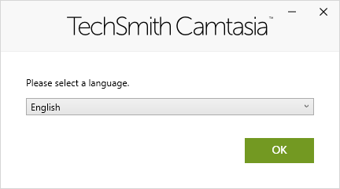
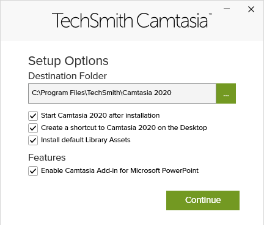

Installing Camtasia¶
Camtasia is commercial software. To work with the program you need to buy a license and activate it after installation.
Before purchasing you can download a trial version of the program to test all the features and functions available in Camtasia. The evaluation version is valid for 30 days, after which you will need to install a license to continue working with the program.
Note
Creating an account for the trial version
To use the trial version of Camtasia, you must create an account on the TechSmith website. When creating an account, you need to provide an email address and a password. You can do this after installing the program.
To install the program, follow these steps:
Download the appropriate distribution (for Windows or Mac) from the TechSmith website. Here you will also find the current hardware and software requirements for installing the program.
Start the installation by double-clicking on the installation file.
Select the language in which to install the program. At the moment Russian is not supported in the installation program, so we choose the Eng-lish language.
Click the OK button to display the license agreement window.
Activate the I accept the License Terms option and click the Install button.
Optional: Click the Options button and in the window that opens, configure the desired settings. You can change the path to install the program, activate / deactivate the launch of the program directly after installation, etc. We recommend keeping the default settings. Click the Continue button.
The program is installed on your computer.
The installation progress is displayed on the screen.
After the installation process is complete, click the Finish button.
The installer closes.
In some cases, you may need to reboot the system to complete the installation.
{kind=link}
{kind=link}
{kind=link}
{kind=link}